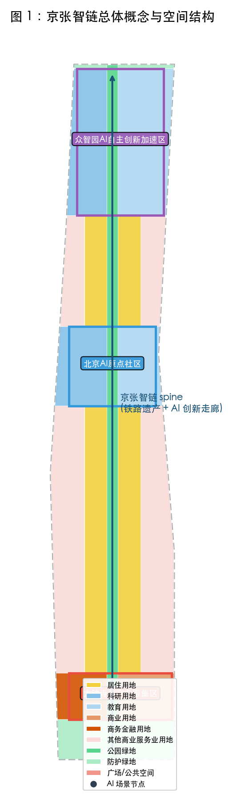
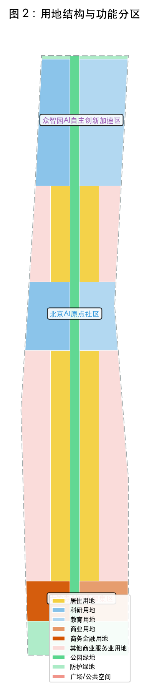
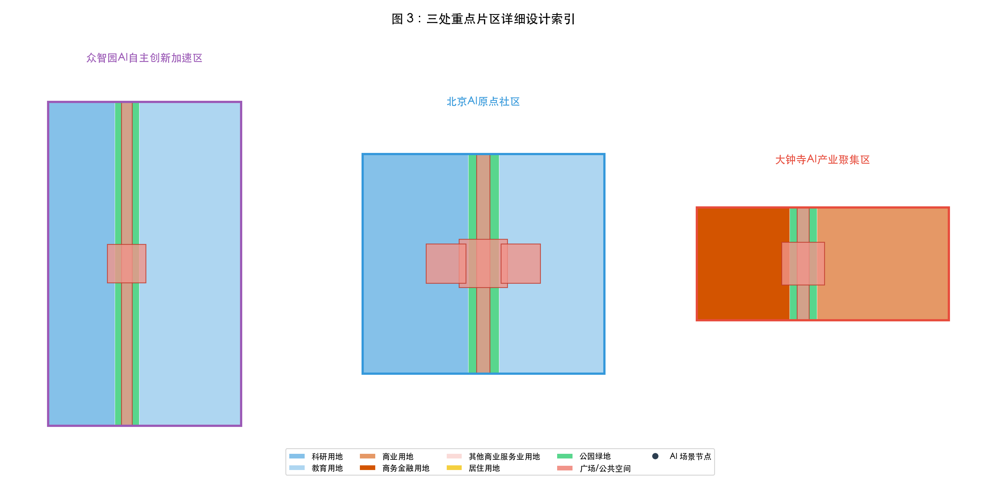
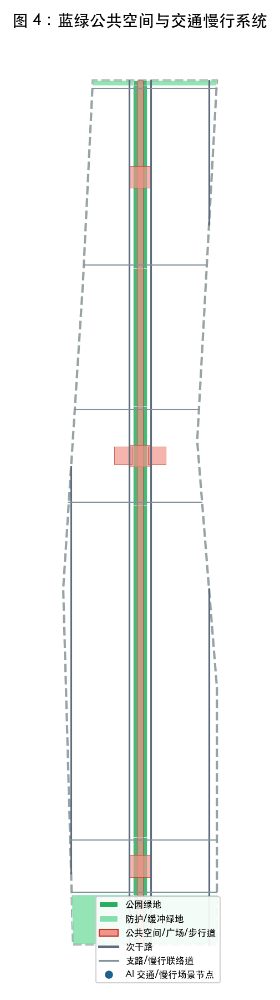
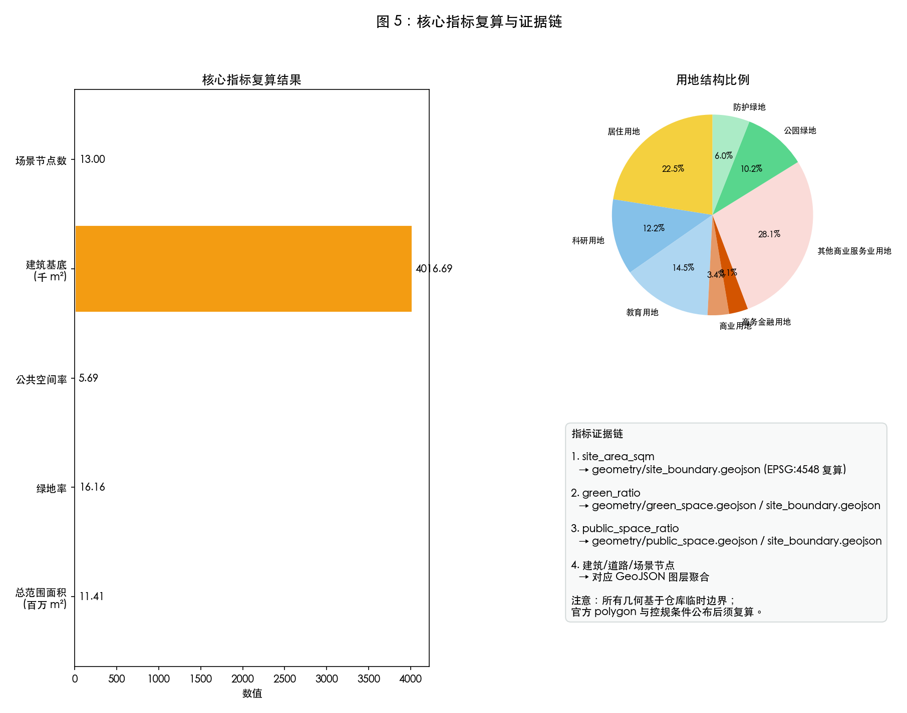

京张智链：百年铁路遗址上的 AI 创新走廊
以京张铁路遗址公园为南北向智链 spine，串联众智园、AI原点社区、大钟寺三核，东西双翼协同，构建‘百年京张文化带、都市AI生活体验带、AI融合创新带’三位一体的世界级AI创新走廊。
京张智链：百年铁路遗址上的 AI 创新走廊
设计依据与资料清单
本方案以北京市规划和自然资源委员会海淀分局发布的《百年京张AI创新带城市设计国际方案征集资格预审公告》来源 为任务主控，以仓库提供的面向全球智能体任务书摘录 来源 为AI agent共创原则与六项任务依据，并参照《城市设计管理办法》标准、《城市、镇控制性详细规划编制审批办法》标准 与《国土空间调查、规划、用途管制用地用海分类指南》标准 进行专业深度与用地分类表达。
空间数据采用仓库维护的 provisional_boundaries.geojson空间数据。该边界依据公告文字四至、约面积和道路名称在 EPSG:4548 下校核，已明确标记为 provisional_constraint，不能替代 official redline、道路红线或精确面积依据 来源。待官方 CAD/GIS/PDF 或资格预审文件公布后，须替换边界并重新生成所有图层、指标与图纸。
完整来源记录、指标公式、合规矩阵、专业标准矩阵与设计深度矩阵分别见 sources.json、metrics.json、compliance_matrix.json、standard_matrix.json 与 design_depth_matrix.json。

三层范围工作框架
方案按公告要求建立三层递进工作框架 来源：
- 统筹研究范围（43.6 km²）：北至北五环路、东至京藏高速、南至西直门外大街、西至万泉河路。该层重点回答 AI 产业生态、三区两翼协同、未来城市形态与文化叙事，为后续设计建立产业与品牌坐标 深度。
- 总体设计范围（11.4 km²）：京张遗址公园周边 1—2 公里城市地区与产业区，北至北五环路、东至学院路/西土城路、南至西直门外大街、西至大钟寺东路/荷清路。该层以控规深度开展城市更新，形成空间结构、用地布局、交通市政、蓝绿系统与更新项目清单 空间数据。
- 重点区域范围（368.4 ha）：自北向南包括众智园 AI 自主创新加速区、北京 AI 原点社区、大钟寺 AI 产业集聚区，开展详细城市设计 空间数据。
三层范围均使用仓库临时 polygon，其精度为 provisional rough，仅用于 AI 生成、展示与自检。设计中的任何面积、比例与控制指标均为设计模型值，待 official polygon 公布后复算 [assumption:ASSUMPTION-001]。

统筹研究范围产业与未来城市研究
一带总体概念
“京张智链 / Jing-Zhang Intelligence Chain” 以京张铁路百年工业遗产为文化 spine，以中关村创新文化为基因，以人工智能新质生产力为动能，形成一条南北贯通、东西缝合、三区联动的 AI 创新走廊。三大定位回应任务书要求 来源：
- 百年京张文化带：保留铁路遗址公园的线性空间记忆，将京张铁路从“工业遗存”转化为“创新文化地标”。
- 都市AI生活体验带：以人才一日生活圈为核心，组织工作、学习、居住、消费、运动与社交的复合场景。
- AI融合创新带：将高校源头创新、企业全栈研发、场景测试验证、开发者社区运营融为一体。
五大功能与三区两翼协同
方案落实任务书提出的五大功能 来源：
1. AI全栈自主创新体系（众智园核心）：基础研究、开源框架、算力基础设施与标准治理。 2. 世界级AI创新生态（AI原点社区核心）：高校成果转化、人才特区、开源社区与国际合作。 3. AI+场景赋能新范式（小月河场景赋能翼）：城市治理、交通、公共服务、科研仪器共享等测试验证场景。 4. 智能化AI活力城市（大钟寺核心）：智能体消费、智能终端、内容创作与商业服务。 5. AI治理全球话语权（众智园与中关村科技服务翼联动）：安全评测、标准制定、国际会议与政策对话。
“三区两翼”形成闭环：三核提供产业内容与空间载体，东翼提供资本、IP 与专业服务，西翼提供场景测试与公共体验 来源。
区域协同矩阵
方案在“三区两翼”内部协同基础上，进一步建立与周边战略节点的概念性协作接口 来源。下表所列均为概念协同方向，不代表已达成合作协议或政府承诺；具体合作须由相关产权主体、管理部门与市场主体另行协商。
| 协同节点 | 相对位置 | 潜在协作接口 | 空间/产业载体 | 来源状态 |
|---|---|---|---|---|
| 北纬社区 | 统筹研究范围西北部 | 人才公寓、国际学校、国际化生活服务配套 | 众智园以北预留居住与服务用地 | 概念方向，待官方规划确认 |
| 未来科学城 | 北向约 15 km | 算力枢纽、大科学装置联动、企业总部第二总部 | 京藏高速/京新高速走廊、城际联络 | 概念方向，待官方规划确认 |
| 怀柔科学城 | 东北向约 40 km | 基础研究—应用研究转化、科研仪器共享、人才交流 | 京张高铁/市郊铁路快线、学术网络 | 概念方向，待官方规划确认 |
| 经开区（亦庄） | 东南向约 20 km | 智能制造、具身智能测试、供应链配套 | 京津城际、高速路网、产业飞地 | 概念方向，待官方规划确认 |
| 京津冀城市群 | 区域尺度 | 标准互认、场景互通、品牌联合推广、人才流动 | 京张高铁、京藏高速、京津冀协同机制 | 概念方向，待官方规划确认 |
全球案例借鉴与比较
本方案参考 6 个全球 AI 与创新生态案例，形成可迁移经验矩阵。案例事实均来自公开资料或官方发布；本表仅作概念借鉴，不构成对这些案例的完整评价。
| 案例 | 地点 | 核心特征 | 可迁移经验 | 来源状态 |
|---|---|---|---|---|
| 巴塞罗那 22@ | 西班牙巴塞罗那 | 旧工业区转型为创新街区，保留工业遗存，混合办公、居住、教育与商业 | 工业遗产作为空间认同；小街区密路网；文化事件激活公共空间 | 公开案例资料 |
| 多伦多滨水区 / Sidewalk Labs（概念方案） | 加拿大多伦多 | 数据驱动的城市实验、公众参与、数字基础设施试点 | 城市尺度的数据治理沙盒；公众参与机制；模块化城市基础设施 | 公开案例资料 |
| 匹兹堡机器人谷 / 奥克兰 | 美国匹兹堡 | 卡内基梅隆大学—企业—政府协同，自动驾驶与机器人测试场 | 高校技术溢出；真实城市环境测试；产学研政策联动 | 公开案例资料 |
| 巴黎 Station F | 法国巴黎 | 创业者社区运营、活动品牌、大企业—初创企业共生 | 共享工作空间；社群活动品牌；企业导师与创业加速器 | 公开案例资料 |
| 深圳南山科技园 | 中国深圳 | 产业链集聚、人才住房配套、政府—市场协同 | 龙头+中小企生态；人才住房与公共服务锁定创新人群；快速迭代政策 | 公开案例资料 |
| 伦敦国王十字 / 谷歌校园 | 英国伦敦 | 交通节点周边高密度知识区、文化设施与公共空间网络 | 铁路遗产区再生；步行网络；文化设施与科技产业混合 | 公开案例资料 |
可迁移经验在本方案中的落地路径：京张铁路遗址公园对应“工业遗产空间认同”；三核广场与开源发布厅对应“公共平台降低交易成本”；全球 AI 活动周、开发者节对应“年度活动维持社群活力”；人才公寓与社区服务中心对应“人才住房与公共服务锁定创新人群” 来源。
总体设计范围城市更新与控规深度城市设计
空间结构
总体设计范围以“一链三核、双翼六廊”为空间结构 空间数据：
- 一链：京张铁路遗址公园绿色 spine，中央为步行道与 AI 场景节点，两侧为公园绿地与文化廊道。
- 三核：三个重点片区自北向南依次布局全栈自主、成果转化与智能经济功能。
- 双翼：东侧中关村科技服务翼以商务金融、教育、专业服务为主；西侧小月河场景赋能翼以科研、居住、测试场景为主。
- 六廊：沿三个重点片区边界设置六条东西向慢行联络道，缝合铁路两侧被分割的城市肌理。
用地布局
用地布局采用《国土空间调查、规划、用途管制用地用海分类指南》代码 标准。在 11.4 km² 总体设计范围内，用地以科研用地（0802）、教育用地（0804）、商业服务业用地（09 类）、居住用地（0701）、公园绿地（1401）与广场用地（1403）为主 空间数据。具体比例与指标见 metrics.json 与图 5。
更新框架
由于缺少现状建筑、地块权属与控规条件，本方案将更新对象分为三类概念策略 深度：
- 保留（Retain）：高校、科研院所与现状品质较好的教育科研建筑，以功能植入与公共空间提升为主。
- 改造（Renovate）：工业遗存、低效商业与社区服务设施，转化为 AI 公共服务、人才公寓与创新孵化器。
- 拆除/新建（Demolish/New-build）：安全隐患突出、功能严重不符的构筑物，在 official 控规允许前提下更新为混合功能建筑。
所有拆改留判断均为概念建议，不构成法定规划或工程实施结论 来源。
重点区域详细设计
众智园 AI 自主创新加速区
定位为花园型自主创新街区，承载 AI 全栈自主创新体系与 AI 治理全球话语权 空间数据。
- 空间策略：以众智园智源广场为节点，组织开源发布厅、AI 安全治理廊、校企转化客厅等场景；西侧布置科研用地，东侧保留教育功能。
- 建筑更新：以低—多层科研建筑为主，保留高校建筑，改造部分低效空间为展示与会议功能。
- 公共空间：在中央 spine 设置智源广场，东西向慢行联络道连接两侧地块。
- 实施风险：provisional polygon 精度低，正式边界公布后须重新校核功能布局与面积。
北京 AI 原点社区
定位为近校型成果转化街区，突出高校源头创新、开源社区与人才服务 空间数据。
- 空间策略：以 AI 原点开源广场为核心，布局教育、科研与人才公寓混合功能；西侧为科研仪器共享等测试验证场景，东侧为教育与国际合作空间。
- 建筑更新：以“低扰动更新”为原则，优先活化校园周边与轨道站点周边建筑。
- 公共空间：开源广场作为开发者日常聚会与发布节点，东西向慢行廊道强化站点一体化。
- 实施风险：高校建筑权属复杂，任何改造须取得产权主体与管理部门同意。
大钟寺 AI 产业聚集区
定位为城市型智能经济街区，重点发展智能体、智能终端、内容消费与商业服务 空间数据。
- 空间策略：以大钟寺智能体广场为核心，西侧为商务金融用地，东侧为商业用地；地铁站四象限通过地下/地面步行系统连通。
- 建筑更新：鼓励立体复合开发，底层为智能原生商业与展示，上部为办公与人才公寓。
- 公共空间：智能体广场作为消费体验与发布节点，沿街设置低碳算力驿站与数据要素剧场。
- 实施风险：大钟寺站一体化改造涉及轨道运营安全与地下空间权属，须专项研究。

AI 创新生态、人才画像与 AI+ 场景
人才画像
方案设定 5 类核心用户 来源：
1. 青年研究者：需要实验室、算力、学术交流与科研仪器共享。 2. 开源开发者：需要共享工作空间、发布平台、社群活动与快速交通。 3. 产业工程师：需要企业研发中心、测试场、供应链服务与人才公寓。 4. 本地居民：需要生活服务、文化设施、无障碍公共空间与参与渠道。 5. 国际访客：需要 AI 体验路线、多语言导览、文化活动与交通接驳。
AI+ 场景卡
方案提出 13 个 AI 场景节点，覆盖 10 张以上场景卡要求，其中 3 个为产业测试验证场景 来源：
| 编号 | 场景名称 | 空间位置 | 服务对象 | 隐私与复核 |
|---|---|---|---|---|
| SC-001 | 开源发布厅 | 众智园智源广场 | 开发者、企业、高校 | 公开活动，人工复核内容版权 |
| SC-002 | 城市智能体沙盒 | AI原点开源广场 | 研究机构、企业 | 限定测试域，人工接管机制 |
| SC-003 | 慢行断点诊断 | 西侧翼 | 城市管理者、市民 | 匿名化数据，人工复核改造建议 |
| SC-004 | 人才生活管家 | 东侧翼 | 人才、居民 | 最小必要数据，人工客服兜底 |
| SC-005 | AI 安全治理廊 | 众智园 | 标准机构、企业 | 公开评测，独立第三方复核 |
| SC-006 | 校企转化客厅 | 西侧翼 | 高校、企业、投资人 | 合同约束，人工撮合 |
| SC-007 | 数据要素剧场 | 大钟寺 | 企业、公众 | 合规数据，脱敏展示 |
| SC-008 | 低碳算力驿站 | 大钟寺西广场 | 企业、公众 | 能耗数据公开，人工巡检 |
| SC-009 | 京张记忆线路 | 中央 spine | 游客、市民 | 公开文化内容，无个人隐私 |
| SC-010 | 全球 AI 活动周路线 | 中央 spine | 全球开发者 | 公开活动，人工组织 |
| SC-011 | 产业测试验证场景-AI交通信号 | 众智园东 | 交管部门、企业 | 限定路口，交警复核 |
| SC-012 | 产业测试验证场景-具身智能配送 | 大钟寺 | 物流企业、物业 | 限定时段与区域，人工监控 |
| SC-013 | 产业测试验证场景-科研仪器共享 | 西侧翼 | 高校、科研院所 | 预约制，机构授权 |
每个场景均明确数据来源、隐私边界、人工复核机制与运营主体，避免过度监控或无法人工复核的设计 来源。
场景卡完整字段（以 SC-002 城市智能体沙盒为例）
| 字段 | 内容 |
|---|---|
| 场景名称 | 城市智能体沙盒 |
| 空间位置 | AI 原点开源广场及周边限定街区 |
| 服务对象 | 城市治理研究机构、AI 企业、市政管理部门 |
| 技术成熟度 | TRL 5–7（概念验证到运行环境验证） |
| 数据 provenance | 市政公开数据、 anonymized 交通流量、气象数据 |
| 隐私边界 | 不采集个人身份、人脸、车牌明文；数据脱敏后进入沙盒 |
| 人工复核机制 | 测试方案须通过伦理与安全审查；实时运行设人工接管按钮 |
| 运营主体（概念） | AI 原点社区运营平台 + 市政管理部门 |
| KPI | 测试项目数、人工接管率、问题闭环时长、公众投诉率 |
| 失败阈值 | 连续 3 次人工接管率超过 5% 或发生隐私泄露即暂停测试 |
| 退出标准 | 通过 6 个月稳定运行评估后，可申请进入示范段 |
其余 12 个场景均按同一模板在 compliance_matrix.json 中登记，字段包括场景名称、空间位置、服务对象、数据来源、隐私边界、人工复核、运营主体、KPI、失败阈值与退出标准。
公共空间组件库与朝圣地标目录
- 公共空间组件库：模块化座椅（带无线充电与信息屏）、雨水花园、AI 互动装置、多语言信息亭、无障碍坡道与盲道、临时活动展架、铁路遗产展示单元。
- 朝圣地标目录：京张智源塔（展示年度开源贡献者与 AI 突破）、开源发布厅（全球模型/框架首发地标）、智能体广场（具身智能与智能终端展示）、京张记忆线（铁路遗址文化朝圣路线）、数据要素剧场（数据要素流通展示窗口）。
- 荣誉展示系统：年度开源贡献者墙、AI 安全治理认证榜、全球 AI 活动周永久展廊。
用地、建筑规模与拆改留方案
用地面积
geometry/land_use.geojson 对总体设计范围进行了拓扑无缝分区，用地类型与面积见 metrics.json 与图 5。核心指标包括：
- 总范围面积：11.41 km²（由提交边界复算）
- 绿地率：约 16.16%指标
- 公共空间率：约 5.69%指标
建筑规模
由于缺少官方控规条件，容积率、建筑密度与建筑高度在本方案中标记为 unknown指标。概念性建筑 footprint 仅用于表达空间意向，不代表真实建筑布局。建筑更新策略以“保留为主、改造优先、局部新建”为原则，具体拆改留结论须待现状建筑、权属与控规条件补齐后由专业团队深化 [assumption:ASSUMPTION-002]。
交通、轨道、市政与公共服务设施
交通策略
方案提出“轨道引领、慢行优先、东西缝合”的交通策略 空间数据：
- 轨道站点一体化：强化大钟寺、清华东路西口、五道口等站点与周边用地的一体化设计，设置垂直交通核与地下连通道（概念示意）。
- 道路微循环：保留现状主次干路红线（待 official 数据补齐），加密支路网络，减少过境交通穿越重点区。
- 慢行系统：中央 spine 步行道与六条东西向慢行联络道构成“丰”字形慢行骨架，保障铁路两侧连续可达。
- 停车与非机动车：在重点区设置公共自行车/电动自行车换乘点，停车位供给结合地下空间综合解决。
市政与公共服务
方案提出分布式能源、端侧算力驿站与海绵城市设施的融合策略，但具体管线、排水、电力、燃气、消防通道等工程数据缺失，当前仅为概念方向 [assumption:ASSUMPTION-003]。公共服务设施包括人才公寓、社区服务中心、教育设施、文化与体育设施，布局结合用地分区与人口需求估算。

蓝绿空间、公共空间与城市风貌
蓝绿系统
京张铁路遗址公园是方案的核心蓝绿 spine。设计将其从线性隔离带转化为连续的公园绿廊与公共空间序列 空间数据：
- 中央步行道：贯穿南北的 50 m 概念步行道，承载 AI 活动、文化展示与慢行交通。
- 公园绿地：两侧布置公园绿地，保留工业遗产元素，增加雨水花园与海绵设施。
- 东西联络绿廊：六条东西向慢行联络道不仅是交通通道，也是渗透绿意的生态廊道。
公共空间
公共空间由中央步行道、三处重点区广场、东西翼社区客厅和六条东西向联络道组成 空间数据。公共空间总面积约 64.93 ha，公共空间率约 5.69%。这些空间支撑创新交往、AI 场景测试、文化展示与市民日常生活。
朝圣地标
方案提出 3 个 AI 朝圣地标/荣誉展示节点 来源：
1. 京张智源塔：位于众智园智源广场，展示 AI 领域重大突破、开源贡献者与年度人物。 2. 开源发布厅：位于 AI 原点开源广场，成为全球开发者发布新模型、新框架的标志性空间。 3. 智能体广场：位于大钟寺，展示具身智能、智能终端与城市智能体应用。
这些地标均为概念设计，不涉及对现有建筑的改造结论，须取得权属与管理部门同意后深化。
城市风貌
风貌控制遵循《城市设计管理办法》关于建筑高度、体量、风格、色彩的引导 标准：
- 总体基调：科技、人文、低碳、开放。
- 重点区差异：众智园以花园型低—多层科研建筑为主；AI 原点社区以近校型混合街区为主；大钟寺以城市型立体复合建筑为主。
- 文化遗产：铁路遗址、桥涵、站台等工业元素通过景观化、标识化方式保留展示。
更新项目清单、实施政策与分期计划
分期策略
geometry/phasing.geojson 将更新分为三期：
- 近期（PH-001）：京张智链绿色 spine 与三核启动区，包括中央步行道、三处广场、首批 AI 场景节点与基础设施。
- 中期（PH-002）：东西翼产业与生活配套更新，包括科研、教育、商业、居住混合功能的渐进式改造。
- 远期（PH-003）：南北门户与区域协同深化，包括与更大范围城市系统的功能衔接与品牌输出。
实施政策建议
政策方向包括：创新用地复合利用、存量建筑功能转换、人才住房配建、AI 场景开放测试沙盒、数据要素合规流通、绿色低碳激励等。所有政策建议均为概念方向，不构成政府承诺或已审批安排 来源。
长期运营与品牌资产
年度运营日历（概念框架）
| 月份 | 旗舰活动 | 运营目标 | 空间载体 | 责任主体（概念） |
|---|---|---|---|---|
| 1–2 月 | 年度开源贡献者评选、AI 安全治理白皮书研讨 | 社群沉淀、标准发声 | 开源发布厅、AI 安全治理廊 | 开发者社区、标准机构 |
| 3–4 月 | 场景开放日（交通信号、科研仪器共享） | 企业—城市对接 | 众智园东、西侧翼测试场 | 企业、交管部门、高校 |
| 5 月 | 全球 AI 活动周、开发者节 | 品牌峰值、国际传播 | 中央 spine、三核广场 | 运营平台、国际组织 |
| 6–7 月 | 具身智能配送开放测试、暑期实习生营 | 技术验证、人才输送 | 大钟寺、AI 原点社区 | 企业、高校、物业 |
| 8–9 月 | 城市智能体沙盒路演、竞赛 | 创新项目孵化 | AI 原点开源广场 | 孵化器、投资机构 |
| 10–11 月 | 京张记忆文化节、国际 AI 治理论坛 | 文化叙事、政策对话 | 中央 spine、众智园 | 文化机构、智库 |
| 12 月 | 年度成果发布、下一周期预算与 KPI 复盘 | 绩效评估、持续改进 | 开源发布厅 | 运营联盟 |
品牌资产与视觉识别（概念方向）
- 命名体系：中文“京张智链”、英文“Jing-Zhang Intelligence Chain”、缩写“JZIC”。
- Logo 方向：以京张铁路“人”字形展线抽象为神经元突触，铁轨枕木线条转化为数据流，形成“百年轨道 × AI 神经网络”的符号；主色为深蓝（科技）+ 锈红（工业遗产）+ 浅绿（生态）。
- 标识家族：导视系统采用枕木模块单元，可变尺度应用于广场标识、街道家具、数字界面与活动视觉；设置中/英/盲文/二维码多模态信息板。
- 铁路遗产文化语法：保留并展示铁轨、道岔、信号灯、站台等工业元素，通过景观化、标识化与艺术化方式转化为公共空间的文化锚点。
- 应用示例：活动主视觉、广场地雕、人才卡、开源贡献者荣誉墙、AI 场景节点导视牌。
- 无障碍排版规则：中文正文使用无衬线黑体，最小 14 pt；英文使用无衬线字体；关键信息同时提供图标与文字；高对比度配色。
开发者社区与治理机制（概念模型）
- 开发者社区运营：开源发布厅作为线下枢纽，AI 原点社区提供人才公寓与共享工作空间，线上平台承载代码仓库、模型发布与讨论区。
- 场景访问流程：企业/研究机构提交测试申请 → 沙盒管理委员会进行安全与隐私审查 → 限定时空域内测试 → 数据脱敏后输出评估报告 → 成果择优进入示范段。
- 人才/企业转化路径：青年研究者 → 开源贡献者 → 创业团队 → 入驻孵化器/企业研发中心 → 参与全球 AI 活动周 → 获得人才公寓与政策支持。
- 资金假设（概念）：近期以政府引导资金与高校科研经费为主，中期引入产业基金与社会资本，远期通过场景运营、品牌授权与专业服务实现部分自我造血。
- 长期 KPI（概念）：年度开源贡献者数量、AI 场景测试项目数、国际会议与活动场次、人才公寓入住率、绿色出行比例、公众满意度调查。
国际传播漏斗
- 叙事核心：“百年铁路 + AI 未来”——从詹天佑的“人”字线到当代 AI 的神经网。
- 传播渠道：全球 AI 活动周、国际开源会议、海外社交媒体、双语网站与视觉索引。
- 体验产品：京张 AI 体验路线、开发者朝圣之旅、国际学生研学营。
指标体系、面积复算与合规矩阵
核心指标
metrics.json 中所有已知指标均从提交几何复算，关键指标如下 指标指标指标：
- 总体设计范围面积：11,412,825 m²
- 绿地率：16.16%
- 公共空间率：5.69%
- AI 场景节点数：13
- 产业测试验证场景数：3
容积率、建筑密度、建筑高度等依赖官方控规的指标保持 unknown 并说明原因 指标。
合规矩阵与设计深度
compliance_matrix.json 覆盖公告 1.3、1.4、1.5 与 agent.1—agent.6 的全部任务要求；standard_matrix.json 覆盖公告、任务书、《城市设计管理办法》、《城市、镇控制性详细规划编制审批办法》与《用地用海分类指南》；design_depth_matrix.json 将现状诊断、三层范围、总体结构、用地布局、重点区详细设计、交通蓝绿、建筑更新、指标复算、风险合规等深度项标记为 complete，并注明受 provisional boundary 与缺失控规影响的限制 深度。

风险、版权与合规说明
数据与规划风险
- 官方精确边界、控规条件、现状建筑、权属、市政管线与文保控制线缺失，所有空间结论为 provisional 设计模型 [assumption:ASSUMPTION-001][assumption:ASSUMPTION-002][assumption:ASSUMPTION-003]。
- 本方案不构成法定规划、审批结论、工程可行性或政府实施承诺 来源。
版权与合规
- 所有图表、HTML、GeoJSON 与文本由 Kimi Code 基于公开/清权资料生成，未使用未经授权的字体、商标、人物肖像或企业标识。
- 中文字体使用 macOS 系统自带的 STHeiti，符合系统使用许可。
- 临时边界来源与官方公告已在
sources.json与report/copyright_statement.md中记录。 - AI 生成内容不侵犯个人隐私，场景设计包含人工复核与隐私边界说明。
完整版权声明显见 report/copyright_statement.md。
参考资料
1. 北京市规划和自然资源委员会海淀分局，《百年京张AI创新带城市设计国际方案征集资格预审公告》，2026-05-09 来源。 2. 用户提供清权任务书，《面向全球智能体开展百年京张AI创新带城市设计开源征集任务书摘录》，2026-05-18 来源。 3. 中华人民共和国住房和城乡建设部，《城市设计管理办法》，2017 标准。 4. 中华人民共和国住房和城乡建设部，《城市、镇控制性详细规划编制审批办法》标准。 5. 中华人民共和国自然资源部，《国土空间调查、规划、用途管制用地用海分类指南》，2023 标准。 6. 仓库维护者，《百年京张AI创新带三层范围与三处重点区临时粗略 polygon》，2026-06-05 来源。 7. 北京市科学技术委员会、中关村科技园区管理委员会，《“三区两翼”打造世界级AI集聚地》，2026-04-03 来源。 8. 北京市海淀区人民政府，《海淀区发布“1+X+1”现代化产业体系建设布局》，2026-03-02 来源。